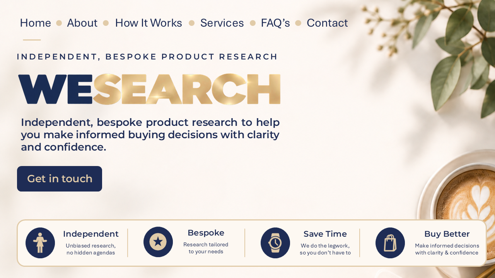
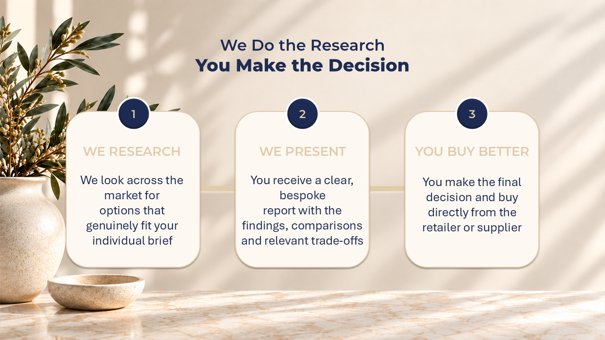
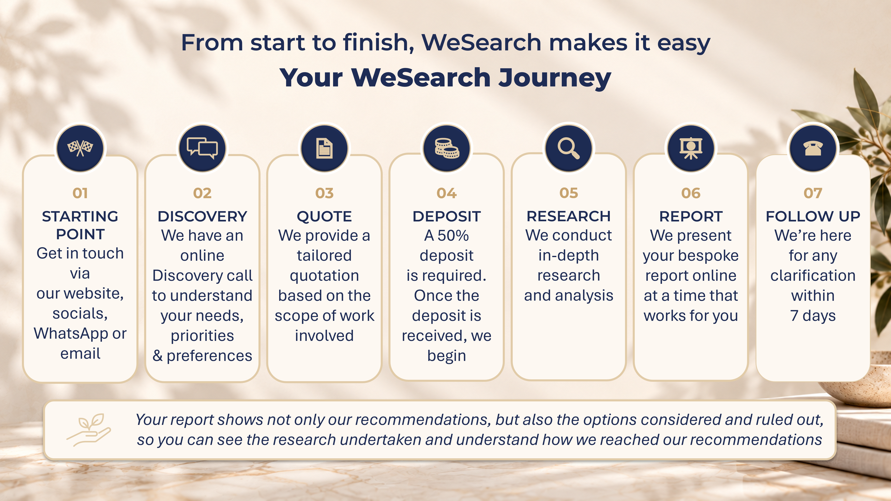
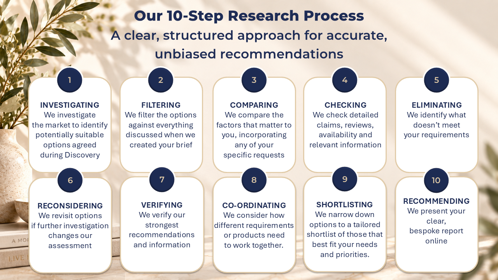
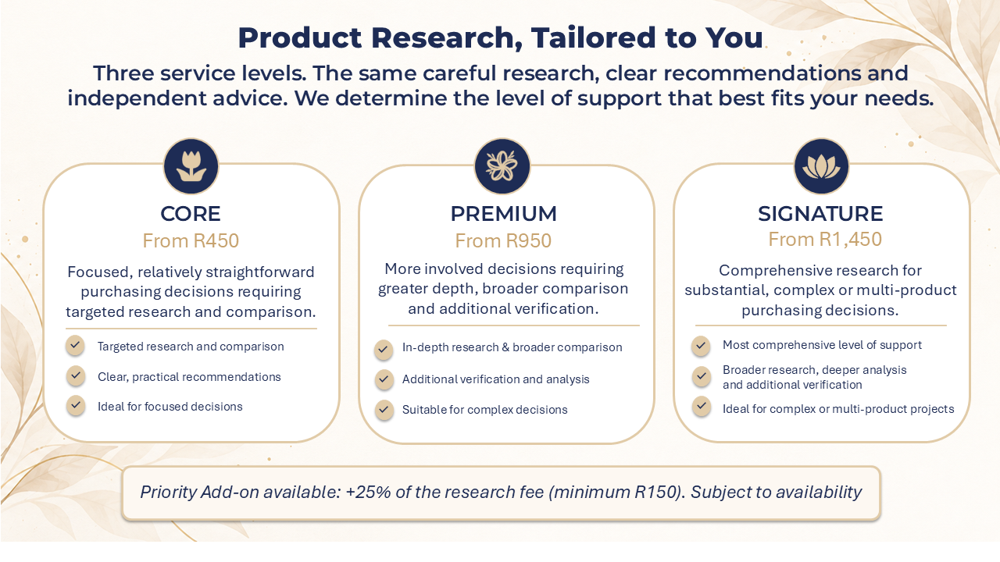
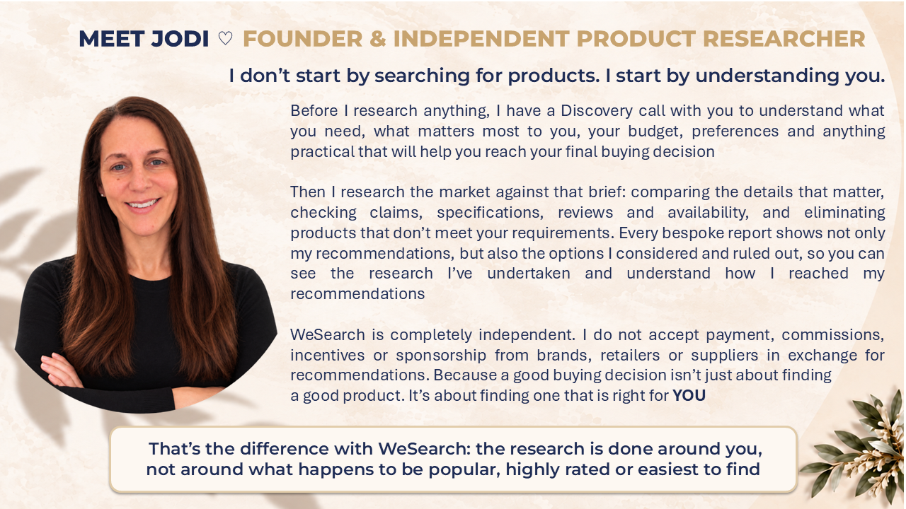
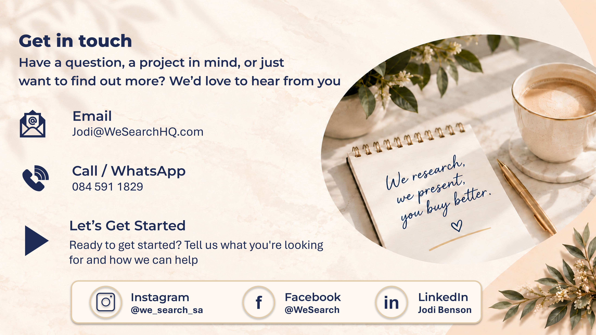

Questions? We've Got You.
Everything you need to know before getting started with WeSearch.
What exactly does WeSearch do?
WeSearch provides independent product research tailored to your individual requirements, comparing suitable options and presenting the findings and recommendations in a clear, bespoke report.
Why wouldn't I just use Google or AI myself?
You absolutely can. Google and AI can be very useful tools for researching and comparing products. What WeSearch does differently is dig deeper into whether a product is genuinely right for you — not just whether it looks good on paper or online. We look beyond specifications, prices and reviews to investigate the practical details that could make the difference between something that seems right and something that works for your specific needs, priorities, budget and intended use. We compare, question, check, eliminate, reconsider and verify, looking for limitations, trade-offs or details that may not be immediately obvious. We then bring that information together with human judgement to narrow down the strongest options and explain why we recommend them. Our purpose is to help reduce the gap between what you think you're buying online and what you actually experience when you receive and use it. WeSearch is for busy professionals, executives and business owners who don't have the time; full-time parents with competing demands on their time; people who may find the volume of online information difficult to navigate; people who aren't confident researching online or using AI; people overwhelmed by the sheer number of products and options available; and those dealing with complicated, technical or multi-product purchases. Or simply, you may prefer to delegate the research.
Do you sell the products you recommend?
No. WeSearch provides the research service. You decide what to buy and purchase directly from the retailer.
How much does it cost?
Core starts from R450, Premium from R950 and Signature from R1,450. The final research fee is quoted after Discovery based on the scope and complexity of your brief.
When do I pay?
A 50% deposit is payable before research begins. The remaining 50% is payable once research is complete and before the final Research Report is released.
Do you guarantee prices or stock?
No. Retailer prices, promotions, specifications and availability can change. WeSearch reports what is identified during the research period but does not control retailer information or performance.
What if I don't like the recommendations?
Our recommendations are based on the requirements and preferences agreed during Discovery, but the final buying decision is always yours. You have a 7-day clarification period after receiving your report to ask questions about the findings. Any additional research may require a separate quotation if it creates a new scope of work.
Do you use AI?
Yes. WeSearch uses AI as a supporting tool, primarily to help understand unfamiliar or technical product information and to assist with structuring and drafting client communications and templates. All client-specific content is personally reviewed, adapted and finalised by Jodi. AI does not make recommendations or replace Jodi's independent research, verification or human judgement. Jodi personally conducts and oversees every research project and remains responsible for the findings and recommendations presented to you.
